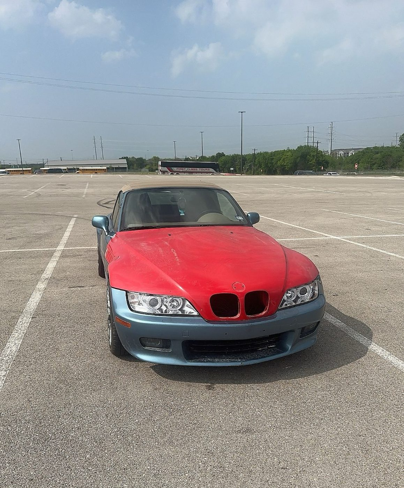
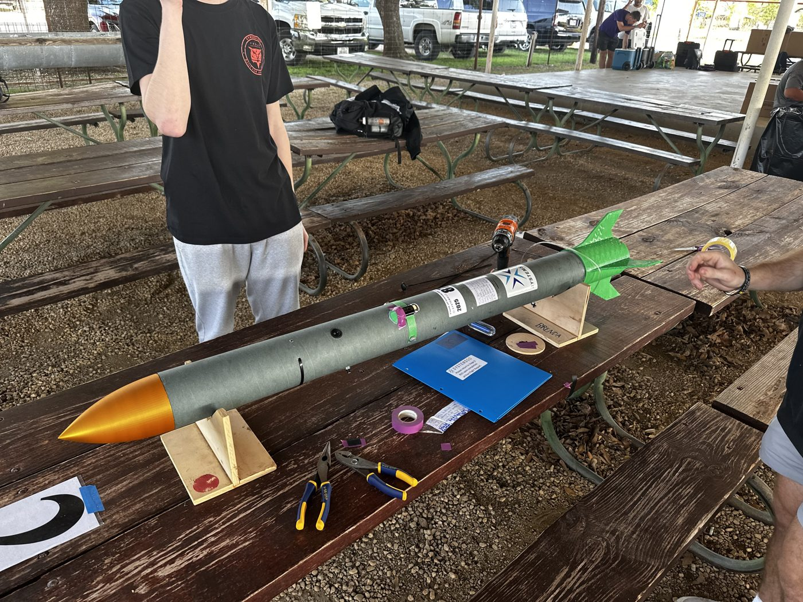

Texas A&M Engineering Academy
Engineering Academy track with coursework in Python, engineering fundamentals, and advanced mathematics. Pursuing a B.S. in Mechanical Engineering, expected 2030.
Texas A&M Engineering Academy · Austin Community College
Engineering Student
Pursuing mechanical engineering with experience in CAD, rocketry, and hands-on automotive restoration. I bring practical problem-solving skills and student leadership experience to collaborative engineering work.
Seeking summer mechanical engineering internships.

Mechanical & electrical systems
Hands-on restoration involving mechanical repairs, electrical troubleshooting, and bodywork.

Rocketry & team-based engineering
Built and launched a rocket with a three-person team at Georgetown High School.
Engineering Academy track with coursework in Python, engineering fundamentals, and advanced mathematics. Pursuing a B.S. in Mechanical Engineering, expected 2030.
Participating in space-related engineering activities and working toward L1 high-power rocketry certification.
$23.5K+
Raised through student council leadership.
Supported guests and coworkers in a fast-paced restaurant environment, developing teamwork, adaptability, and attention to detail.
I welcome opportunities to contribute to engineering projects and continue learning through a summer internship.